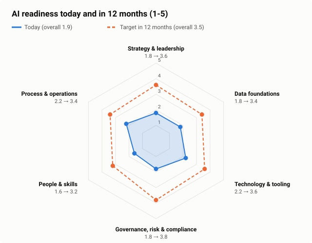
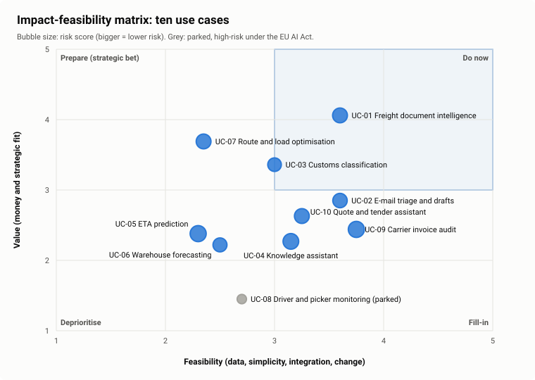
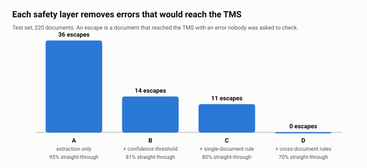
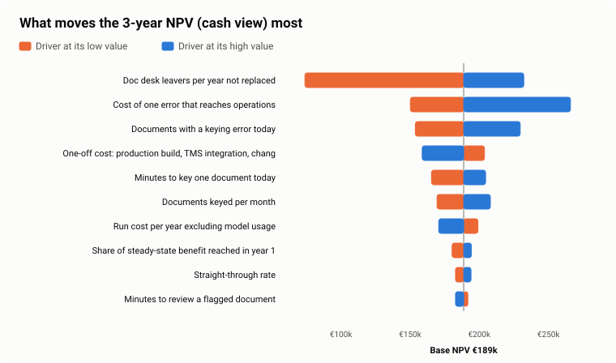
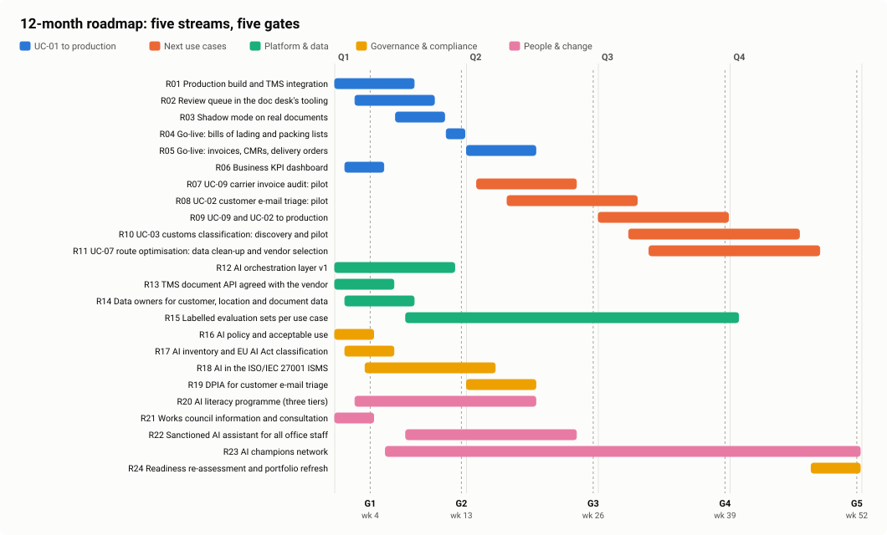

Findings of the 12-week discovery and pilot, and one decision.



| Criterion (workshop 3) | Target | Result |
|---|---|---|
| Errors reaching the TMS unseen | ≤ 1% | 0.0% |
| Below today's human error rate | < 2.1% | yes |
| Straight-through | ≥ 50% | 70.0% |
| Genuine problems sent to a person | ≥ 95% | 100% |
| No silent guessing | always | threshold 0.75 |


Wave 2 (carrier invoice audit, customer e-mail triage) comes back in week 26 with its own business case.